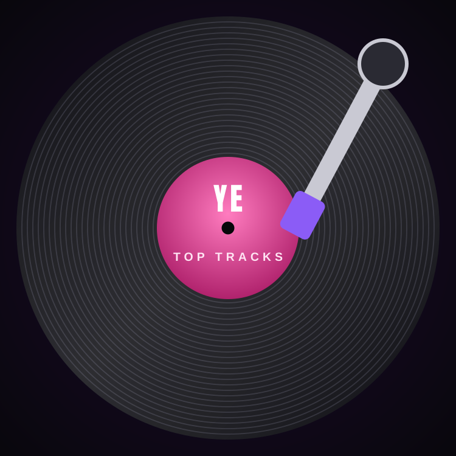
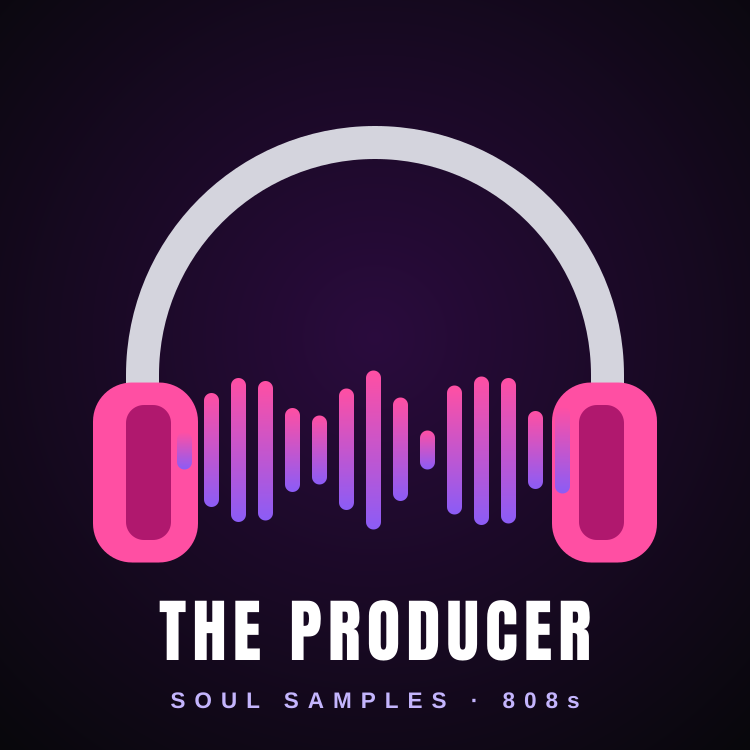

A fan tribute to
Kanye West
This fan site honors Kanye West, the Chicago producer who talked his way into becoming a rapper and ended up as one of the most influential and talked-about artists of the 21st century. Over more than 20 years, he's made 12 solo studio albums and won 24 Grammys, and he changed the sound of hip-hop more than once along the way.
Quick Facts
Explore the Site
His Story
From making beats in Chicago to Roc-A-Fella, Graduation, and everything after.
Read the history →
Top Songs
His biggest hits, plus the five songs loaded into the player below.
See the top songs →Why He Stands Out
Kanye started out behind the boards. He was making beats for other artists long before anyone let him rap, and his sped-up soul samples became the signature sound of Jay-Z's The Blueprint and his own first albums.
He's also never stood still. He went from the soulful "school" albums to the Auto-Tuned heartbreak of 808s & Heartbreak, then to the huge, layered sound of My Beautiful Dark Twisted Fantasy and the harsh, industrial Yeezus. Each change pushed other artists to follow.
The background on this page is the artwork from his 2007 album Graduation, designed by Japanese artist Takashi Murakami.
